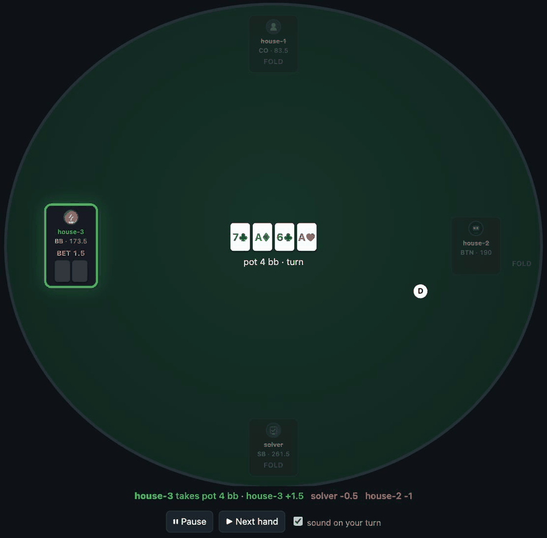

A poker table you can actually sit at.

Deal, bet, show down — with friends in a browser, with bots in process, or both at the same table. Nothing to configure to get started: the built-in opponent needs no API key and no model download.
git clone https://github.com/frla18cz/poker-arena
cd poker-arena
pip install -e '.[dev]'
poker-arena # open http://127.0.0.1:8771Requires Python 3.14+.
Seats are handed out as links. Open the table panel and every human seat has a URL and a QR code beside it — send one to each friend.
poker-arena --lan # everyone on your Wi-Fi
poker-arena --public-base https://your-tunnel.example # over the internetA seat link is a chair at the table: whoever holds it plays that seat and sees its cards. There are no accounts and no passwords — the link is the credential, so share them the way you would hand someone a seat in your living room.
| Seat kind | What it is |
|---|---|
human | waits for a person to click |
heuristic | built-in bot: pot odds against a rough read of its own hand. No key, no model. |
solver | Monte Carlo equity from pokersolver. No key either — it pays in time. |
llm | a language model you point it at, with your own key |
Anything else plugs in through the registry — the arena never needs to know what is behind a seat, only that it can decide:
from pokerarena.engine.seat_registry import register
register("my_bot", lambda build: MyStrategy())That is also how a private bot joins a public table without shipping any of its code here.
Bring your own key. The arena does not ship a model and does not proxy
anyone’s traffic — one prompt per decision, straight from your machine to
whatever provider you already pay for. To keep it local, run Ollama or LM Studio
and point ARENA_LLM_API_BASE at it; then no key is needed and
nothing leaves the machine.
solver seat.